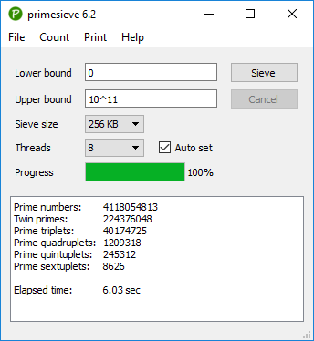
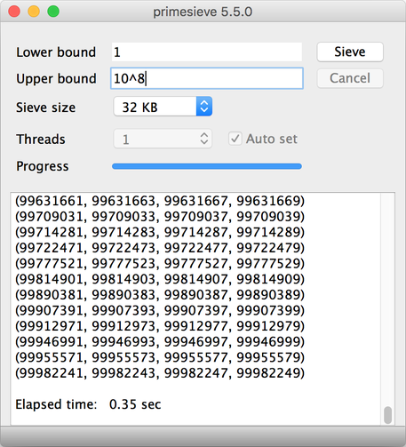
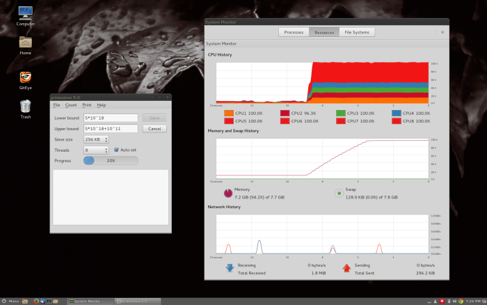
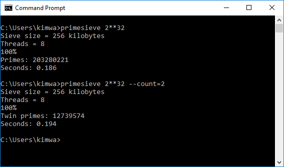
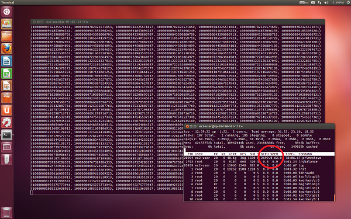

Screenshots
Counting primes and prime k-tuplets on Windows 10.
Printing prime 4-tuplets on macOS.
Stress testing a quad core CPU with the primesieve GUI application (Linux).
Counting primes and twin primes with the primesieve console application on Windows 10.
Generating 20-digit prime septuplets (7-tuplets) on an Amazon EC2 Cluster Compute Instance (2x Intel Xeon E5-2670, 60.5 GB) with the primesieve console application.
